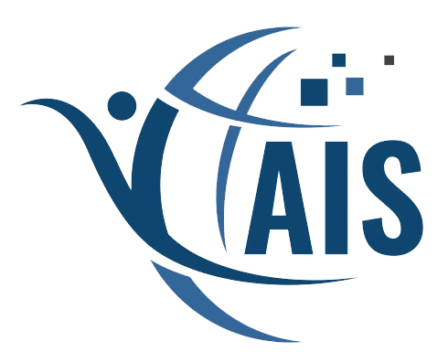
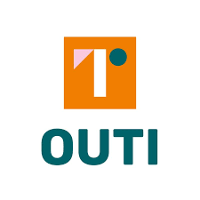
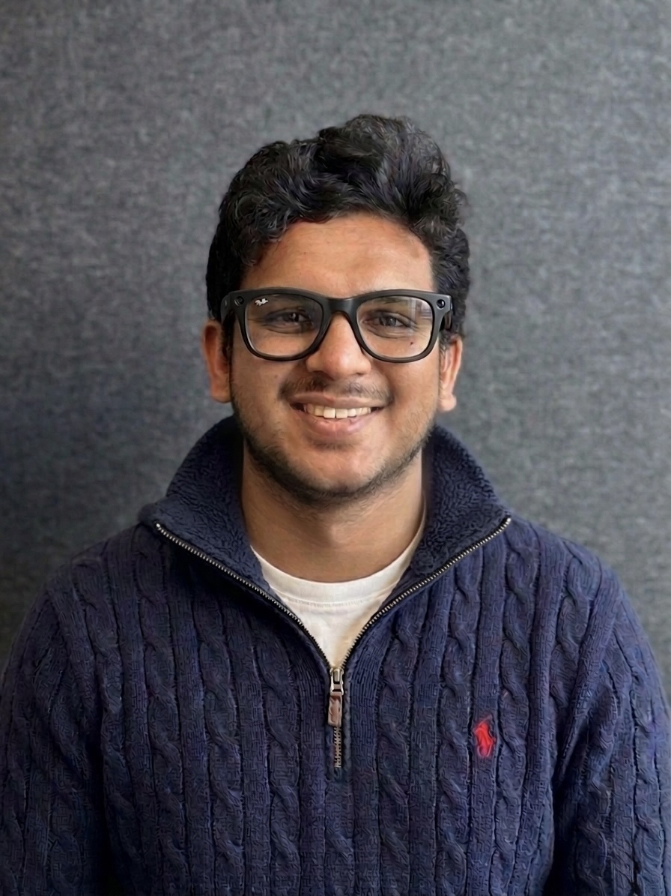
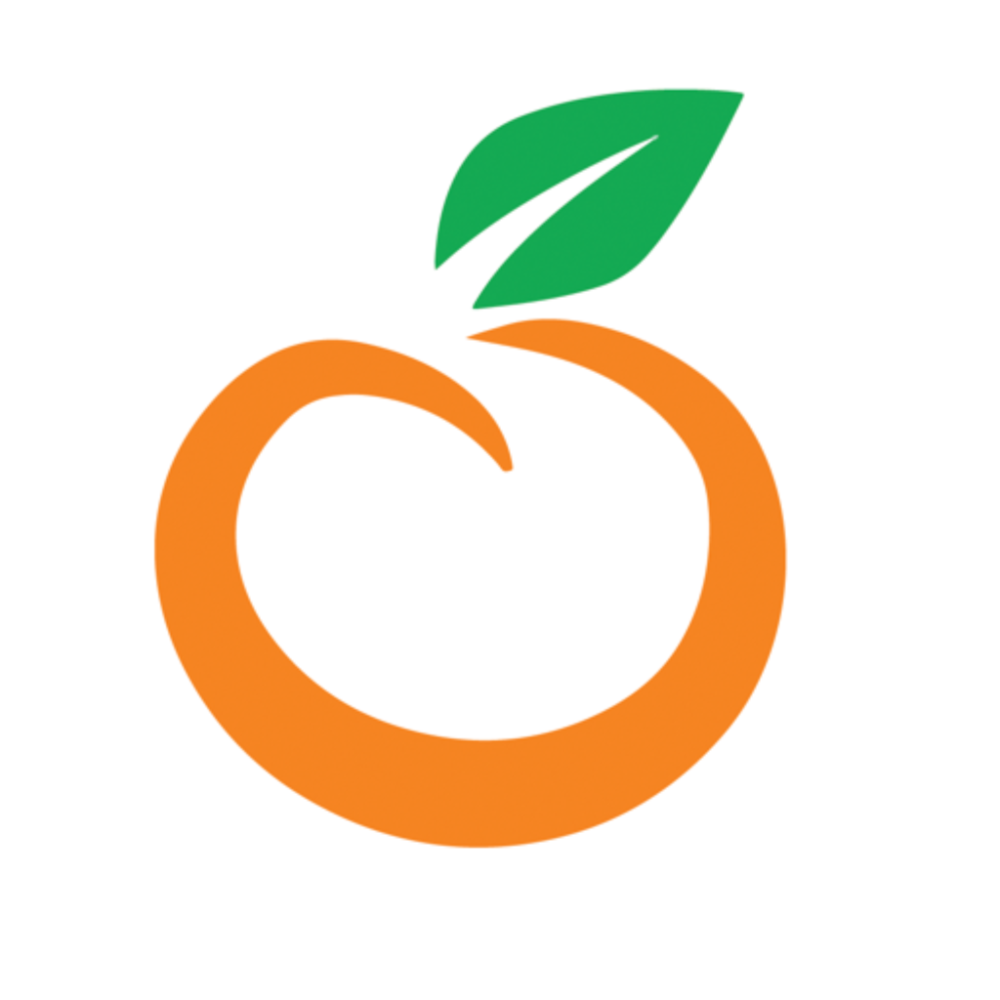
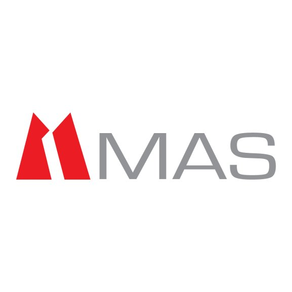

Affiliations


PhD Researcher in Information Systems
Hi, I'm Kavinda

I am currently a PhD candidate in Information Systems at the University of Oulu, within the Software Engineering and Information Systems (SEIS) unit at the Faculty of Information Technology and Electrical Engineering.
My work focuses on understanding how digital systems influence behaviour and how they can be designed to support meaningful, lasting change. I study this through the lens of persuasive technologies, with a focus on digital health interventions, behaviour change support systems, and the role of artificial intelligence in shaping user experiences.
My research also draws on human–computer interaction, exploring how interactive and AI-driven systems can guide users in a way that is both effective and responsible. A central part of my work is understanding how engagement evolves over time, why users disengage, and how systems can be designed to sustain long-term use and achieve positive behavioural outcomes.
University of Oulu
Finland
2025–Present Current
University of Oulu
Finland
2023–2024
University of West London
London, UK
2020–2021
University of Peradeniya
Sri Lanka
2014–2018
Finland

Colombo, Sri Lanka

Panadura, Sri Lanka
Rattota, Sri Lanka

